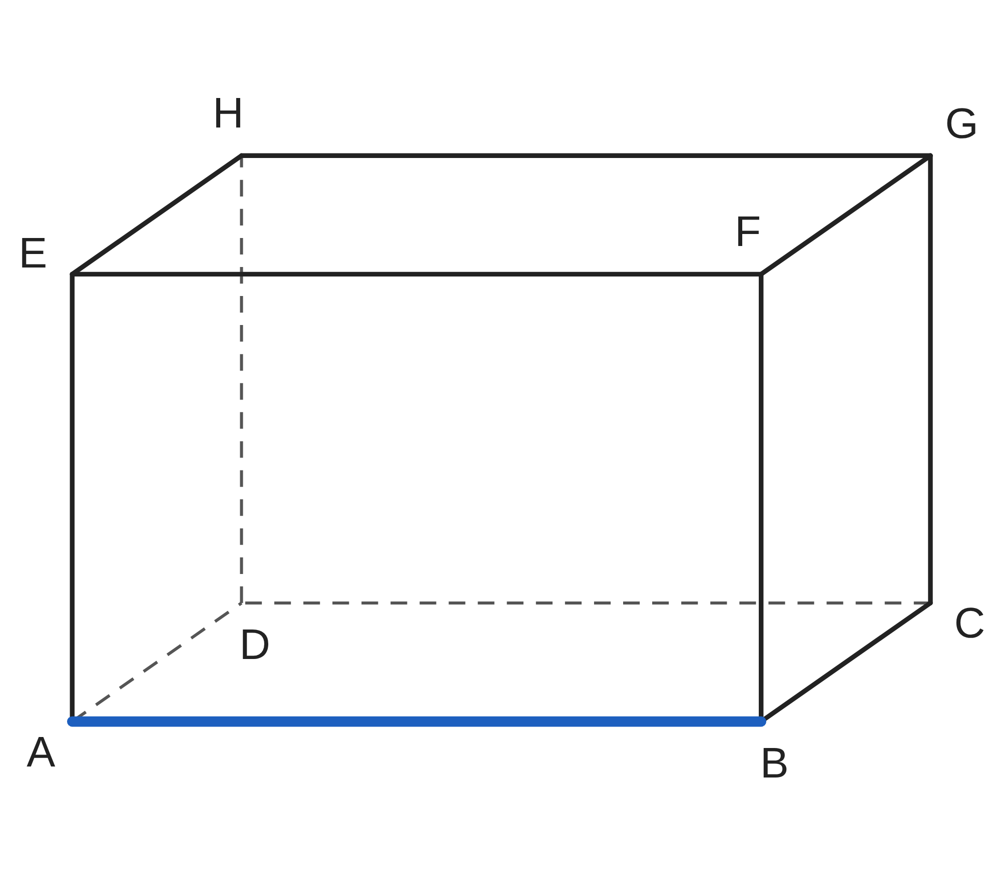
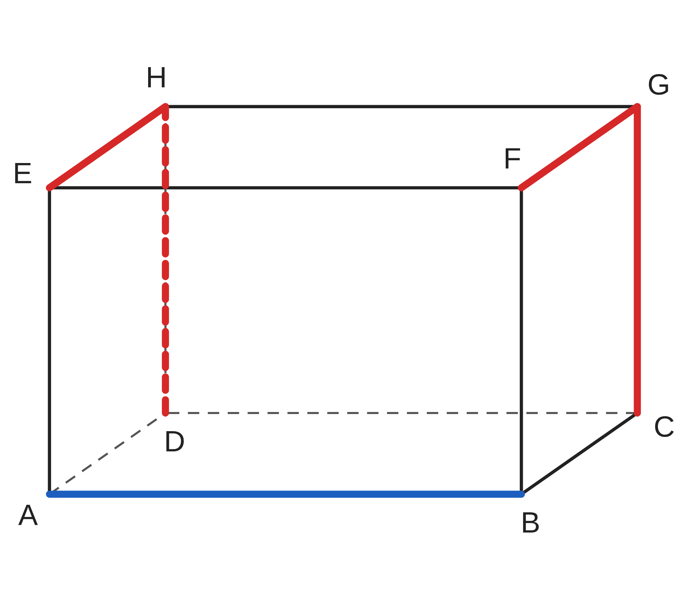
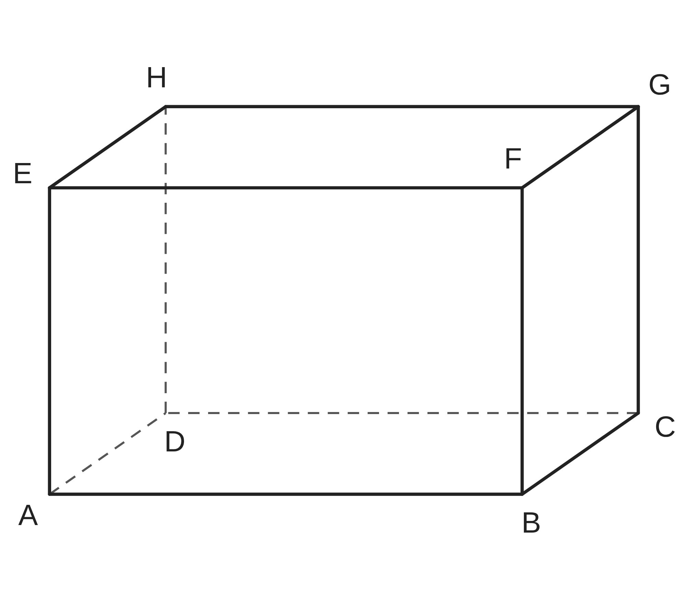
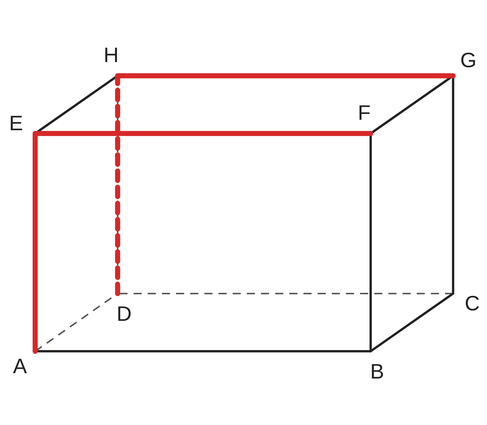

ペア学習
第3時 空間にある2つの直線は、どんな位置関係になるだろう
第2時の重要語句から、1人1問ずつ、言葉を選んで出題する。
聞かれた人は、その言葉の意味を、自分の言葉で言う。
正多面体
正多角形
正四面体
正六面体
正八面体
正十二面体
正二十面体
空間図形 第3時 空間にある2つの直線は、どんな位置関係になるだろう
めあて
第3時 空間にある2つの直線は、どんな位置関係になるだろう
学習課題
直方体で、辺 AB と、
ほかの 11本の辺との関係を調べて、
仲間分けしよう。

【自分の仲間分け】を書いて、【ペアと交換】しよう。
空間図形 第3時 空間にある2つの直線は、どんな位置関係になるだろう
学習課題のまとめ
第3時 空間にある2つの直線は、どんな位置関係になるだろう
直方体で、辺 AB と、ほかの 11本の辺との関係を調べて、仲間分けしよう。
（例）自分の仲間分け
交わる … AD、AE、BC、BF
平行 … DC、EF、HG
交わらないし、平行でもない … DH、CG、EH、FG

空間図形 第3時 空間にある2つの直線は、どんな位置関係になるだろう
ことば
第3時 空間にある2つの直線は、どんな位置関係になるだろう
空間にある 2つの直線の位置関係は、
・ ・ の 3つ。
平行でなく、交わらない 2直線を、 にあるという。
交わる 2直線、平行な 2直線は、同じ 上にある。
ねじれの位置にある 2直線は、同じ平面上に 。
空間図形 第3時 空間にある2つの直線は、どんな位置関係になるだろう
ことば
第3時 空間にある2つの直線は、どんな位置関係になるだろう
空間にある 2つの直線の位置関係は、
交わる・平行・ねじれの位置の 3つ。
平行でなく、交わらない 2直線を、ねじれの位置にあるという。
交わる 2直線、平行な 2直線は、同じ平面上にある。
ねじれの位置にある 2直線は、同じ平面上にない。
空間図形 第3時 空間にある2つの直線は、どんな位置関係になるだろう
例題
第3時 空間にある2つの直線は、どんな位置関係になるだろう
辺 について、
次の辺をすべて答えよう。
（1）平行な辺
（2） に交わる辺
（3）ねじれの位置にある辺

もれなく見つけるくふうを、【ねじれの位置の見つけ方】に書こう。
空間図形 第3時 空間にある2つの直線は、どんな位置関係になるだろう
例題 解答
第3時 空間にある2つの直線は、どんな位置関係になるだろう
辺 BC について、次の辺をすべて答えよう。
（1）平行 … AD、EH、FG
（2）垂直に交わる … AB、DC、BF、CG
（3）ねじれの位置 … AE、DH、EF、HG

ねじれの位置の見つけ方
12本から、「交わる」「平行」の辺を消して、のこりを見つける。
見取図の上で交わって見えても、空間では交わらないことがある。
空間図形 第3時 空間にある2つの直線は、どんな位置関係になるだろう
考えよう
第3時 空間にある2つの直線は、どんな位置関係になるだろう
①
教室の中で見つけた、ねじれの位置にある 2直線の例を書こう。
（できるだけ多く）
②
ねじれの位置にある 2直線が、
同じ平面上にないといえるのは、なぜだろう。理由を説明しよう。
立ち歩いて、教室の中を探してよい。ゴールは、考えようを、全員が説明できること。
空間図形 第3時 空間にある2つの直線は、どんな位置関係になるだろう
振り返り
第3時 空間にある2つの直線は、どんな位置関係になるだろう
今日のめあて
交わる
平行
ねじれの位置
平面
垂直に交わる
今日わかったことを、ペアで1つずつ言い合おう。
ワークシートと演習プリントを出そう。（未完成でも出す）
空間図形 第3時 空間にある2つの直線は、どんな位置関係になるだろう